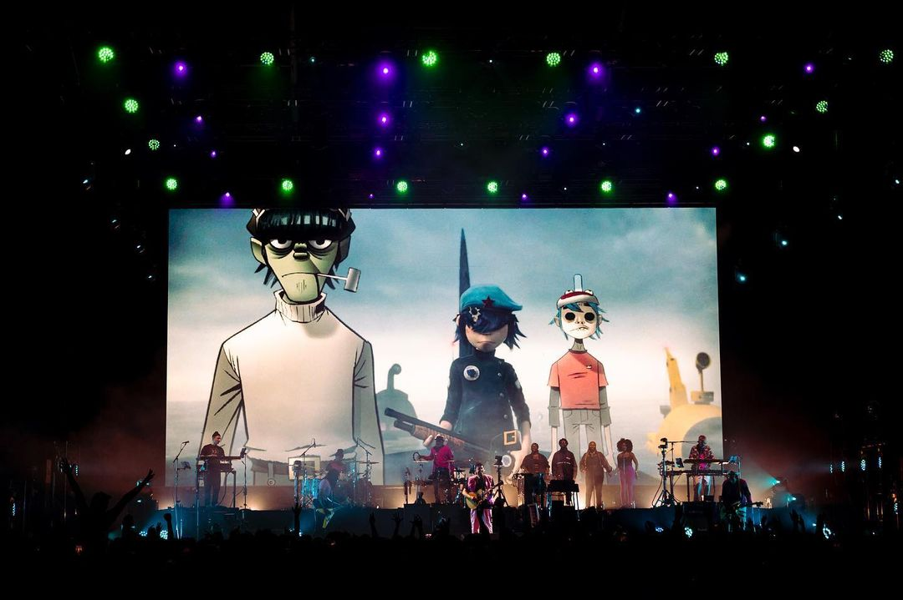
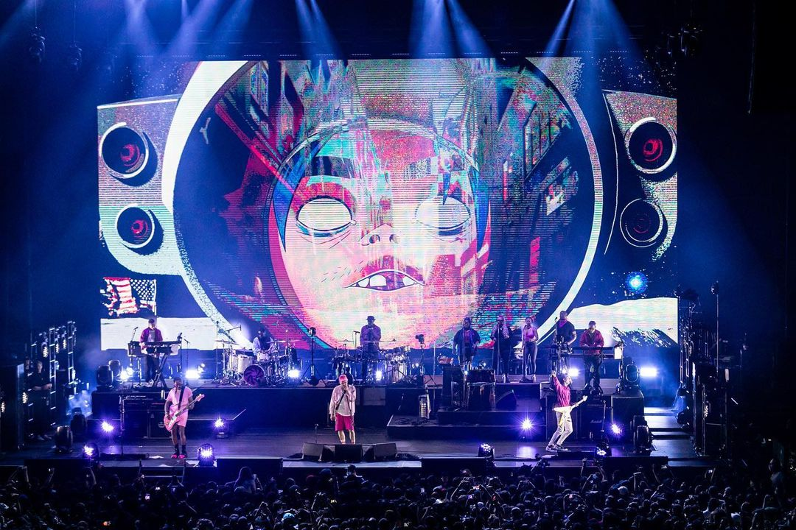
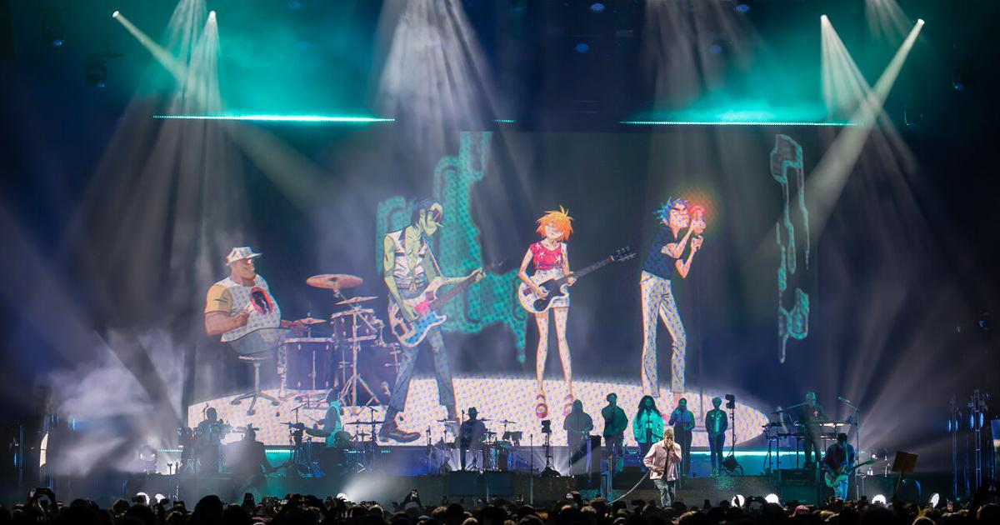

Lietuvos Gorrilaz fanų klubas
Žymiausi kūriniai:
Nuotraukos iš praeitų koncertų:
  
Gorrilaz grupės sudėtis
Murdoc Niccals
(bosinė gitara)
2-D
(vokalai)
Noodle
(elektrinė gitara)
Russel Hobbs
(būgnai)
Klubo būstinės lokacija
Naujienlaiškio prenumerata